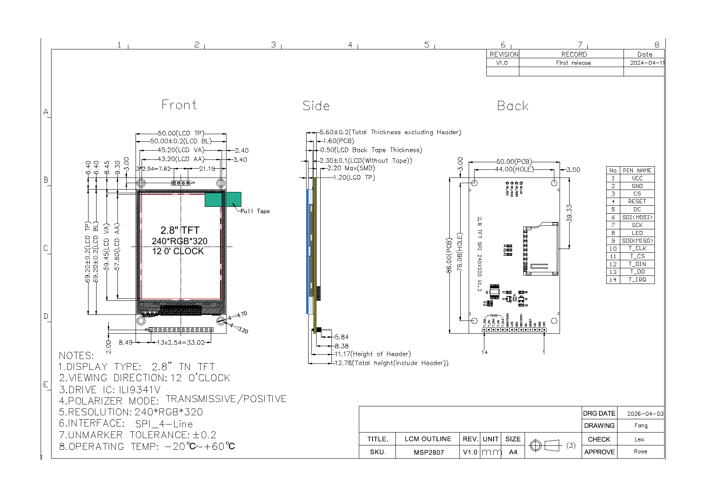
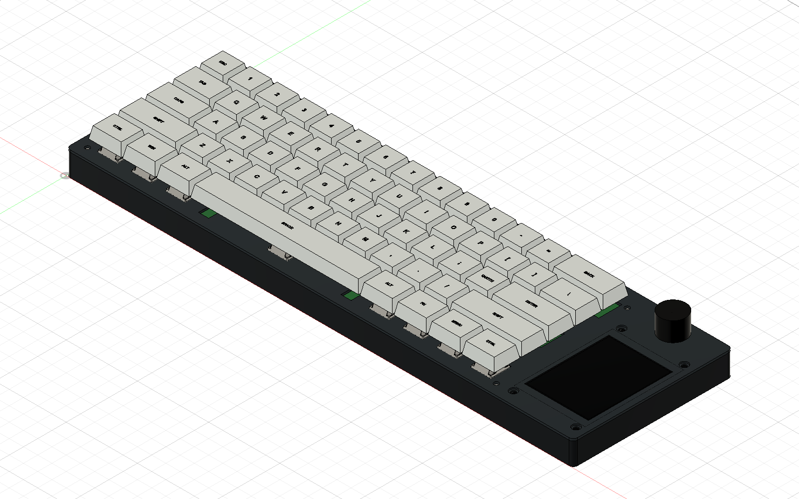
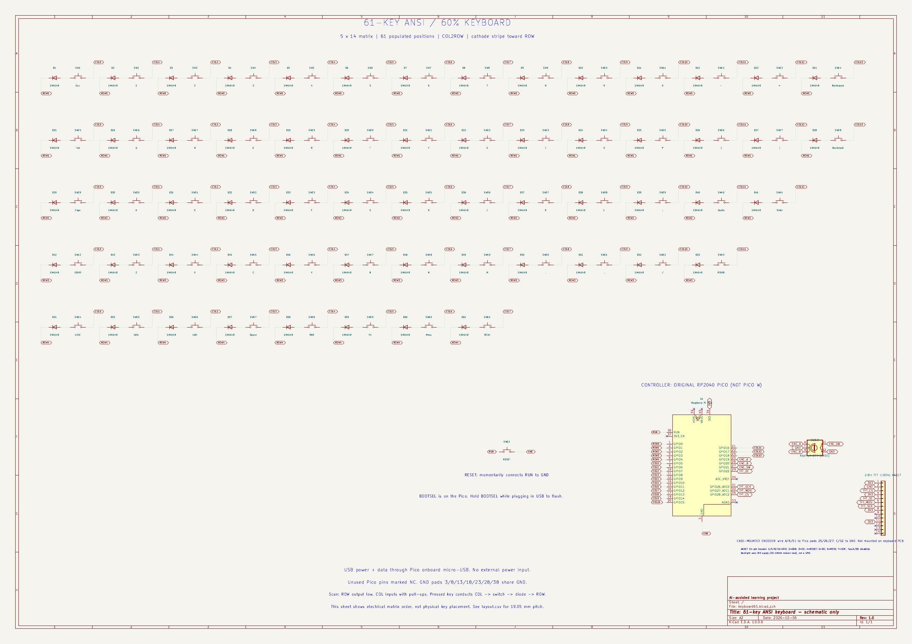
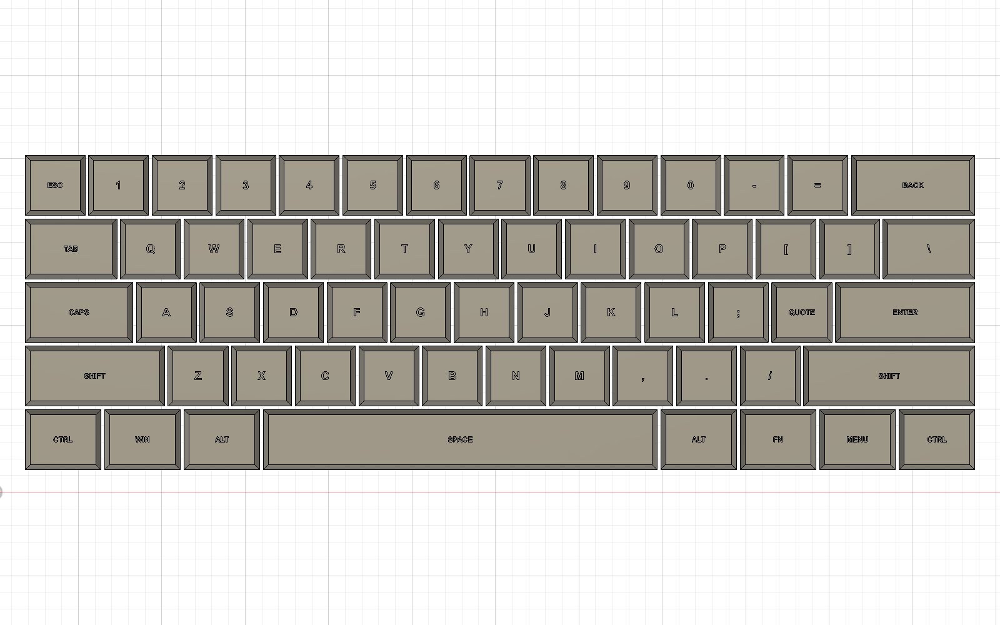
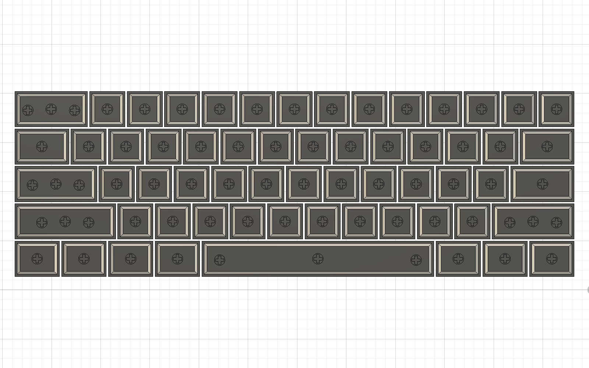

Current design work: TFT dimensional fit, KiCad display wiring, and recessed MX keycap legends/sockets. These are CAD and schematic exports; actual-part and printed fit checks remain outstanding.

1. Display research. The manufacturer's mechanical drawing gives the display PCB dimensions, mounting-hole pitch, active area, and header placement.

2. Display fit in the keyboard CAD. The dimension-based TFT model sits in the portrait opening below the knob. Small pin-to-floor margins still need physical verification.

3. KiCad integration. The ILI9341 SPI header is connected to the Pico nets; unused touch and microSD signals are left unused. ERC reports zero violations.

4. Recessed keycap legends. The key labels are modeled 0.35 mm below the top surface.

5. MX socket geometry. Cross sockets were added to the keycap bottoms, including the multiple stabilizer positions. Print the fit gauge and test actual switches before printing the full set.
Design dimensions are based on vendor drawings and nominal MX geometry. CAD clearance does not establish physical fit.